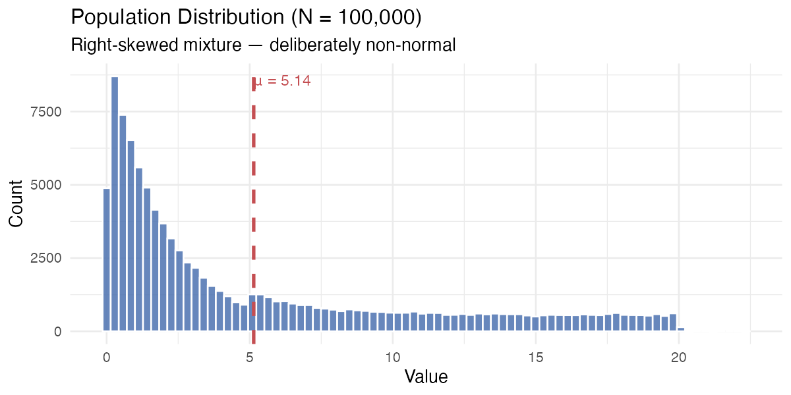
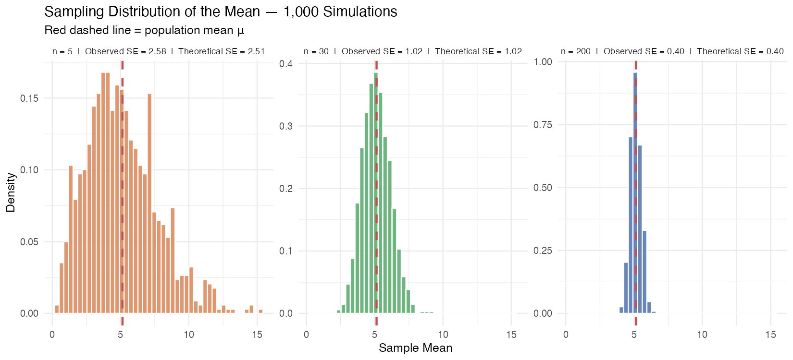
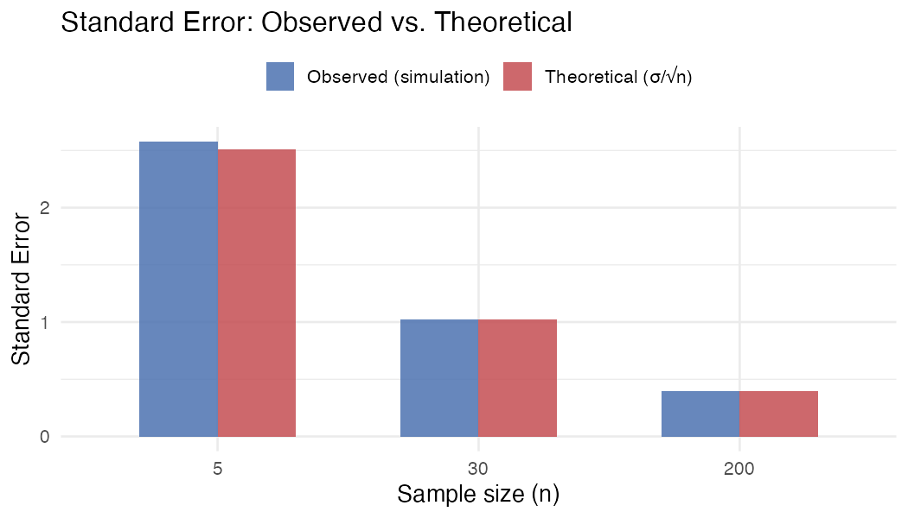
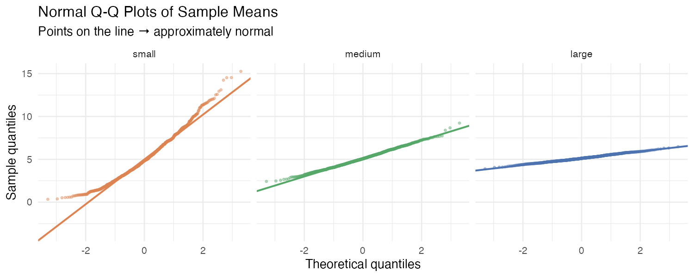

Summer Research Bootcamp · Gresham Lab
Learning to think quantitatively — from data to insight using R.
I'm a student completing a summer research bootcamp in the Gresham Lab, where I've been developing practical skills in experimental design, statistical analysis, and scientific programming in R. This site documents the work I've done — building from first principles in code through to publication-quality data visualisation and statistical simulation.
Gresham Lab — summer bootcamp programme focused on quantitative approaches to biological research.
Statistical computing in R, data visualisation with ggplot2, and understanding the mathematical foundations of inference.
A simulation-based investigation into one of the most important ideas in statistics — how the distribution of sample means behaves as sample size grows, and why this matters for every experiment we run. Built entirely in R using ggplot2, dplyr, and R Markdown.
A deliberately right-skewed population of 100,000 values (exponential + uniform mixture). Chosen to be non-normal so the Central Limit Theorem has something to work against.

1,000 samples drawn at n = 5, 30, and 200. Each panel shows the distribution of sample means. As n grows the distribution narrows and becomes bell-shaped — even though the population is skewed.

The standard error from 1,000 simulations matches the theoretical formula SE = σ/√n almost exactly — confirming the simulation is working and the theory holds.

Normal Q-Q plots reveal the Central Limit Theorem in action. At n = 5 the tails deviate; by n = 200 the sample means are indistinguishable from a perfect normal distribution.

Languages, libraries, and tools I've been using during the bootcamp.